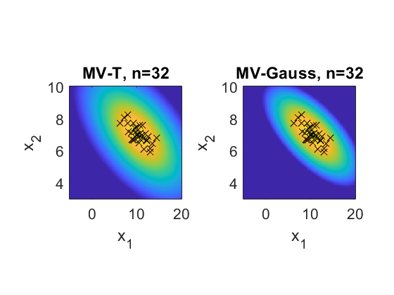
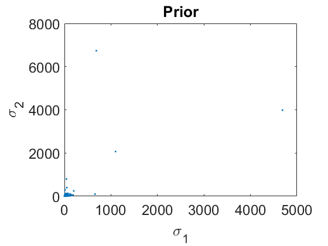
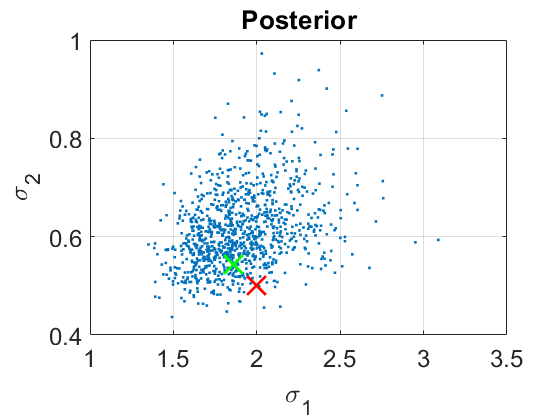
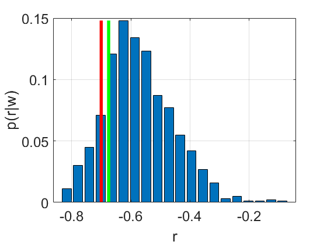

clear all
close all
P=2;
a0=P/2;
B0=diag([1 1]);
beta0=0.01;
m0=zeros(P,1);
mu_w0=m0;
w_s=(beta0/(beta0+1))*(a0-0.5*(P-1));
Lambda_w0=w_s*inv(B0);
v_w0=2*a0-P+1;
figure
subplot(1,2,1);
mvt_plot2D (mu_w0,Lambda_w0,v_w0);
axis square
title('n=0');
pause(0.1);
M.prior.P=P;
M.prior.a=a0;
M.prior.B=B0;
M.prior.beta=beta0;
M.prior.m=m0;
new_data=0;
if new_data
mu=[10,7]';
s1=2;
s2=0.5;
r=-0.7;
c12=r*s1*s2;
C=[s1^2 c12; c12 s2^2];
Lambda=inv(C);
N=32;
x = spm_normrnd(mu, C, N);
save xdata x N s1 s2 r mu C
else
load xdata
end
R.x1_min=-5;
R.x1_max=20;
R.x2_min=3;
R.x2_max=10;
for n=1:N,
M = spm_nwpost (M,x(:,1:n));
clf;
subplot(1,2,1);
mvt_plot2D (M.post.mu_w,M.post.Lambda_w,M.post.v_w,R);
axis square
hold on
for j=1:n,
plot(x(1,j),x(2,j),'kx','MarkerSize',10);
end
title(sprintf('MV-T, n=%d',n));
if n>2
sx=x(:,1:n);
mw=mean(sx,2);
Sw=cov(sx',1);
subplot(1,2,2);
mvn_plot2D (mw,Sw,R);
axis square
hold on
for j=1:n,
plot(x(1,j),x(2,j),'kx','MarkerSize',10);
end
title(sprintf('MV-Gauss, n=%d',n));
end
disp('Posterior Mean NW-Cov:');
M.post.B/M.post.a
drawnow
end
sml_1=sqrt(Sw(1,1));
sml_2=sqrt(Sw(2,2));
rml=Sw(1,2)/(sml_1*sml_2);
Ns=1000;
L=spm_wishrnd(M.prior.B,M.prior.a,Ns);
for s=1:Ns,
C=inv(squeeze(L(:,:,s)));
sig_1(s)=sqrt(C(1,1));
sig_2(s)=sqrt(C(2,2));
rw(s)=C(1,2)/(sig_1(s)*sig_2(s));
end
figure
plot(sig_1,sig_2,'.');
hold on
set(gca,'FontSize',18);
xlabel('\sigma_1');
ylabel('\sigma_2');
title('Prior');
Ns=1000;
L=spm_wishrnd(M.post.B,M.post.a,Ns);
for s=1:Ns,
C=inv(squeeze(L(:,:,s)));
sig_1(s)=sqrt(C(1,1));
sig_2(s)=sqrt(C(2,2));
rw(s)=C(1,2)/(sig_1(s)*sig_2(s));
end
figure
plot(sig_1,sig_2,'.');
hold on
grid on
plot(s1,s2,'rx','MarkerSize',20,'LineWidth',2);
plot(sml_1,sml_2,'gx','MarkerSize',20,'LineWidth',2);
set(gca,'FontSize',18);
xlabel('\sigma_1');
ylabel('\sigma_2');
title('Posterior');
figure
[n,c]=hist(rw,20);
n=n/sum(n);
bar(c,n);
mn=max(n);
set(gca,'FontSize',18);
xlabel('r');
hold on
plot([rml rml],[0 mn],'g','LineWidth',4);
plot([r r],[0 mn],'r','LineWidth',4);
grid on
ylabel('p(r|w)');
Posterior Mean NW-Cov:
ans =
0.8833 0.2228
0.2228 0.8958
Posterior Mean NW-Cov:
ans =
0.8212 -0.0495
-0.0495 0.9491
Posterior Mean NW-Cov:
ans =
5.3387 -0.5355
-0.5355 0.8118
Posterior Mean NW-Cov:
ans =
4.4927 -0.4647
-0.4647 0.6843
Posterior Mean NW-Cov:
ans =
4.7789 -0.6280
-0.6280 0.6434
Posterior Mean NW-Cov:
ans =
4.2906 -0.5874
-0.5874 0.5762
Posterior Mean NW-Cov:
ans =
6.2499 -0.8863
-0.8863 0.5666
Posterior Mean NW-Cov:
ans =
5.8520 -0.8586
-0.8586 0.5263
Posterior Mean NW-Cov:
ans =
5.7006 -0.9341
-0.9341 0.5404
Posterior Mean NW-Cov:
ans =
5.2456 -0.8821
-0.8821 0.5286
Posterior Mean NW-Cov:
ans =
5.4751 -0.9718
-0.9718 0.5272
Posterior Mean NW-Cov:
ans =
5.1931 -0.9320
-0.9320 0.4976
Posterior Mean NW-Cov:
ans =
4.9458 -0.8710
-0.8710 0.4644
Posterior Mean NW-Cov:
ans =
4.7758 -0.8727
-0.8727 0.4580
Posterior Mean NW-Cov:
ans =
4.8274 -0.8316
-0.8316 0.4314
Posterior Mean NW-Cov:
ans =
4.5756 -0.7949
-0.7949 0.4129
Posterior Mean NW-Cov:
ans =
4.4404 -0.7211
-0.7211 0.4008
Posterior Mean NW-Cov:
ans =
4.2287 -0.6866
-0.6866 0.3810
Posterior Mean NW-Cov:
ans =
4.0365 -0.6629
-0.6629 0.3717
Posterior Mean NW-Cov:
ans =
4.0465 -0.6521
-0.6521 0.3567
Posterior Mean NW-Cov:
ans =
3.8983 -0.6070
-0.6070 0.3512
Posterior Mean NW-Cov:
ans =
4.1678 -0.7053
-0.7053 0.3719
Posterior Mean NW-Cov:
ans =
4.0361 -0.6587
-0.6587 0.3667
Posterior Mean NW-Cov:
ans =
3.8811 -0.6341
-0.6341 0.3557
Posterior Mean NW-Cov:
ans =
3.7387 -0.6152
-0.6152 0.3574
Posterior Mean NW-Cov:
ans =
3.6454 -0.6055
-0.6055 0.3484
Posterior Mean NW-Cov:
ans =
3.5216 -0.5840
-0.5840 0.3366
Posterior Mean NW-Cov:
ans =
3.4095 -0.5636
-0.5636 0.3256
Posterior Mean NW-Cov:
ans =
3.3055 -0.5450
-0.5450 0.3151
Posterior Mean NW-Cov:
ans =
3.2798 -0.5277
-0.5277 0.3053
Posterior Mean NW-Cov:
ans =
3.3954 -0.6034
-0.6034 0.3352
Posterior Mean NW-Cov:
ans =
3.3396 -0.6190
-0.6190 0.3506
   